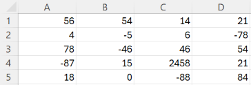

10. Matrius
10.1 Definició
Les matrius són llistes de llistes. Podem pensar en les matrius de 2 dimensions com les cel·les d'un full de càlcul (files i columnes).

llista1 = [54, -9, 64, 44]
llista2 = [-6, 0, 14, 24]
matriu1 = [llista1 , llista2]
matriu2 =[
['a', 'b', 'c'], # fila 0
['x', 'y', 'z'] # fila 1
]
print(matriu2)
print(matriu2[1])
print(matriu2[0][2])
Matrius de 3 dimensions
Es pot treballar també amb matrius 3D. La seua gestió comença a complicar-se a l'haver de treballar amb 3 coordinades.
# Crear una matriu 3D (2x3x4) utilitzant llistes niades
matriu3d = [
[[1, 2, 3, 4], [5, 6, 7, 8], [9, 10, 11, 12]], # matriu 0
[[13, 14, 15, 16], [17, 18, 19, 20], [21, 22, 23, 24]] # matriu 1
]
# Accés als diferents elements
print(matriu3d[0][1][2]) # columna 2 de la fila 1 de la matriu 0
print(matriu3d[0][1]) # fila 1 de la matriu 0
print(matriu3d[0]) # matriu 0
print(matriu3d) # matriu 3D
Matrius de més dimensions
Podem crear matrius amb totes les dimensión que vulguem, però rarament necessitarem matrius de 4D, 5D, ... i la seua manipulació serà un veritable mal de cap.
matriu4d = [
[[[1, 2, 3, 4], [5, 6, 7, 8], [9, 10, 11, 12]],
[[13, 14, 15, 16], [17, 18, 19, 20], [21, 22, 23, 24]]
],
[[[1, 2, 3, 4], [5, 6, 7, 8], [9, 10, 11, 12]],
[[13, 14, 15, 16], [17, 18, 19, 20], [21, 22, 23, 24]]
]
]
Si realment necessitem matrius amb tantes dimensions, potser la solució passa per replantejar-se la solució al problema i utilitzar altres formes de gestió de dades.
EXERCICI: "Hundir la flota"
Implementa la programació del joc "Hundir la flota". Es tracta d'un joc on la representació de les dades en format matricial és la solució més típica.
No crearem un joc completament funcional, simplement utilitzarem matrius per a representar la disposició dels vaixells en el tauler.
Els passos a seguir seran:
- Pas 1: Crear el tauler buit
- Pas 2: Omplir el tauler amb vaixells
- Pas 3: Mostrar el tauler bàsic
- Pas 4: Mostrar el tauler amb coordenades
La solució es basarà en la representació del tauler (el mar) com una matriu de x files per y columnes, on guardarem la posició dels vaixells com 1 i els espais sense vaixells com 0.
Exemple
tablero = [
[0, 0, 0], # Fila 0
[0, 1, 0], # Fila 1
[0, 0, 0] # Fila 2
]
# Recòrrer una matriu de 3x3 amb 2 bucles for niats
for i in range(3): # Files
for j in range(3): # Columnes
print(tablero[i][j], end=" ")
print() # Nova línia per a la següent fila
0 0 0
0 1 0
0 0 0
Pas 1: funció crear_tablero
Defineix una funció crear_tablero que cree un tauler buit:
- Estarà ple de
0s (indica aigua, que no hi ha cap vaixell) - La funció tindrà un paràmetre d'entrada que serà la dimensió del tauler
- El tauler sempre serà un tauler quadrat, de 3x3, 5x5, 11x11 …
- Retornarà una matriu que inclou el tauler
Exemple de print() d'un tauler de 5x5:
[[0, 0, 0, 0, 0], [0, 0, 0, 0, 0], [0, 0, 0, 0, 0], [0, 0, 0, 0, 0], [0, 0, 0, 0, 0]]
Pas 2: funció rellenar_tablero
Crea una funció anomenada rellenar_tablero que:
- No té paràmetres d'entrada
- Pregunte a l'usuari pel tamany del tauler a crear i el genere utilitzant la funció
crear_tableroanterior - Demane a l'usuari, coordenada per coordenada, si vol col·locar un vaixell
- Retorne la matriu del tauler emplenat de vaixells
Exemple d'ús:
tablero = rellenar_tablero()
Pistes:
- Usa
input()per a preguntar:"Fila 2, Columna 3 - ¿Colocar barco? (s/n)" - Convertix la resposta positiva a un
1i actualitza el tauler len(matriu)retorna el nombre de files d'una matriulen(matriu[x])retorna el nombre de columnes de la filaxd'una matriu
Exemple d'execució:
¿Dimensión del tablero?: 3
Fila 0, Columna 0 - ¿Colocar barco? (s/n): s
Fila 0, Columna 1 - ¿Colocar barco? (s/n): s
Fila 0, Columna 2 - ¿Colocar barco? (s/n): n
Fila 1, Columna 0 - ¿Colocar barco? (s/n): n
Fila 1, Columna 1 - ¿Colocar barco? (s/n): s
Fila 1, Columna 2 - ¿Colocar barco? (s/n): s
Fila 2, Columna 0 - ¿Colocar barco? (s/n): s
Fila 2, Columna 1 - ¿Colocar barco? (s/n): s
Fila 2, Columna 2 - ¿Colocar barco? (s/n): n
Resultat del print() del tauler:
[[1, 1, 0], [0, 1, 1], [1, 1, 0]]
Pas 3: funció muestra_tablero
Crearem una funció anomenada muestra_tablero que:
- Accepte un tauler com a paràmetre d'entrada
- Recòrrega el tauler
- Mostre cada cel·la com
Xsi hi ha un vaixell i com~si és aigua
Exemple tauler 5x5:
X X X ~ ~
~ ~ X ~ X
X X ~ ~ ~
X X ~ ~ ~
X X ~ ~ ~
Pas 4: mostrar el tauler amb coordenades
Crearem una nova funció, modificant l'anterior, que mostre el tauler de la següent forma.
Tauler 3x3:
A B C
1 |X|~|~|
2 |~|X|X|
3 |~|X|X|
Tauler 5x5:
A B C D E
1 |X|X|X|~|~|
2 |~|~|X|~|X|
3 |X|X|~|~|~|
4 |X|X|~|~|~|
5 |X|X|~|~|~|
Pistes:
- S'ha d'adaptar als diferents possibles tamanys dels taulers
- Intenta primer aconseguir la visualització amb només les barres horitzontals
- Després passes ja a incloure les lletres i els números de les capçaleres
- Recorda l'ús de la funció
chr()i pensa com et podria servir
1r només les barres:
|X|X|X|~|~|
|~|~|X|~|X|
|X|X|~|~|~|
|X|X|~|~|~|
|X|X|~|~|~|
Una vegada tingues l'anterior, crees les capçaleres:
A B C D E
1 |X|X|X|~|~|
2 |~|~|X|~|X|
3 |X|X|~|~|~|
4 |X|X|~|~|~|
5 |X|X|~|~|~|